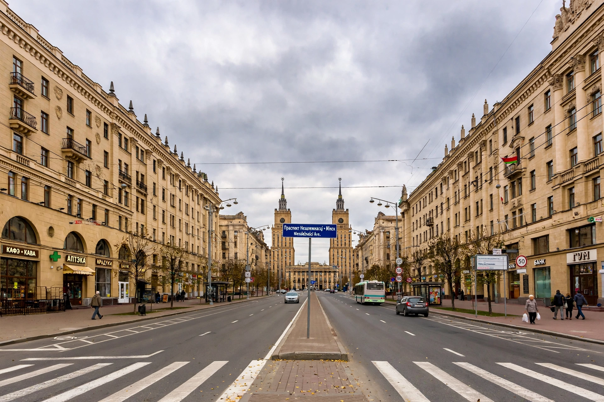

[Image placeholder: Independence Avenue, Minsk's grand Stalinist boulevard]| Country | Belarus |
|---|---|
| First mentioned | 1067 |
| Population | About 2 million |
| River | Svislach and Nyamiha |
**Minsk** is the capital and largest city of Belarus, on the Svislach and the now-underground Nyamiha rivers. First mentioned in 1067, it passed between the principalities of Kievan Rus', the Grand Duchy of Lithuania, the Polish–Lithuanian Commonwealth and the Russian Empire, before becoming capital of Soviet Belarus.
The Second World War destroyed Minsk almost completely: it was occupied by Nazi Germany from 1941 to 1944, its large Jewish population was murdered in the Minsk Ghetto and at Maly Trostenets, and some 80% of buildings were ruined. Rebuilt in monumental Stalinist style along Independence Avenue (one of Europe's grandest socialist boulevards), Minsk became a major Soviet industrial centre (MAZ trucks, MTZ tractors, electronics).
Under Alexander Lukashenko (president since 1994), Minsk remained orderly and heavily policed; the mass protests after the disputed 2020 election were centred here and suppressed with thousands of arrests. Sights include the Island of Tears memorial, the National Library's striking rhombicuboctahedron tower (2006), and the reconstructed Old Town around the Svislach embankment.